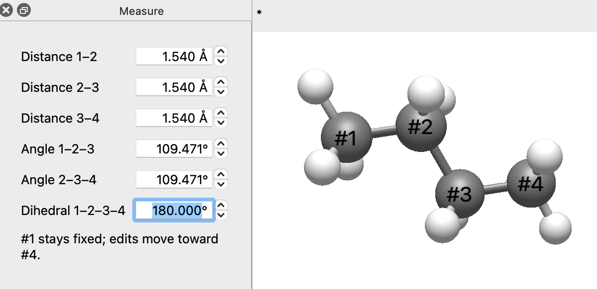
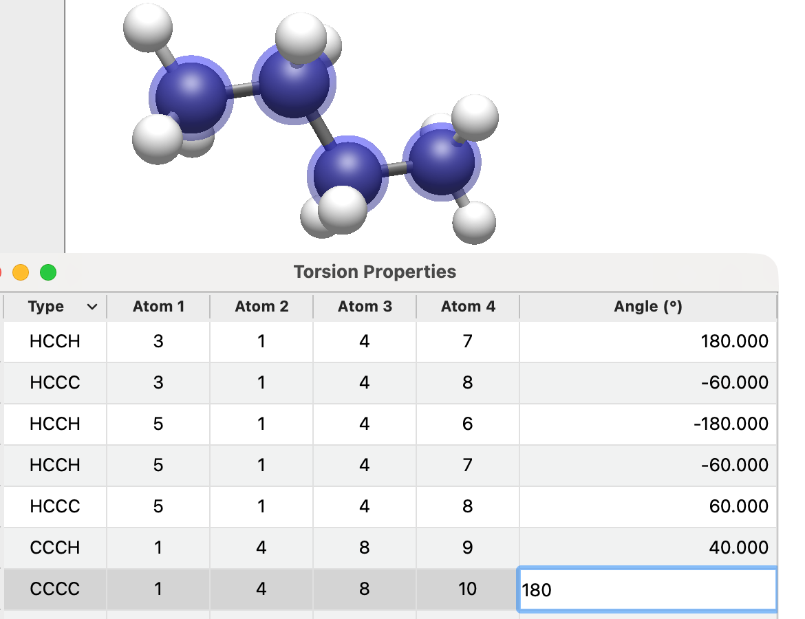

Setting a Bond Length, Angle or Dihedral#
Sometimes you want a bond length, angle or dihedral at an exact value: a C–C bond at 1.54 Å, a water angle at 104.5°, or a torsion at 60° to build a gauche conformer before a scan. Avogadro has several ways to do this. This tutorial walks through each one, so you can pick the one that suits your task.
Method |
Best for |
|---|---|
Quickly setting one value between atoms you click on |
|
Finding and setting a value in a list of every bond, angle or torsion |
|
Setting many values, or building a geometry from internal coordinates |
|
Adjusting by eye with the mouse, while watching the value |
In every case, Avogadro moves only part of the molecule. One end stays fixed, and the other end moves along with everything attached to it on its side of the bond, so the rest of the geometry is preserved.
As an example, build butane (e.g., Build ⇒ Insert ⇒ SMILES… and type CCCC) and set the C–C–C–C dihedral to 60°.
With the Measure Tool#
Tip
New in 2.1 Values can now be typed directly into the Measure tool.
Choose the Measure Tool (Ctrl+8).
Click the atoms in order. Click two atoms for a distance, three for an angle (the second atom is the vertex), or four for a dihedral. For the butane example, click the four carbons from one end to the other.
The Tool pane shows each distance, angle and dihedral that the atoms define. Type the new value (e.g.,
60in Dihedral 1–2–3–4) and press Enter.

Atom #1 stays fixed, and the atoms move toward the last atom you clicked. If an edit can’t be made, for example because the dihedral is around a bond in a ring, a message explains why and nothing moves. See Editing Values for details.
With the Property Tables#
The property tables list every bond, angle and torsion in the molecule:
Analyze⇒Properties⇒Bond Properties…Analyze⇒Properties⇒Angle Properties…Analyze⇒Properties⇒Torsion Properties…
Open the table you need. For the butane example, open the torsion table.
Click a row to find the right one. The atoms in that row are selected in the 3D view.
Double-click the value (the Length (Å) or Angle (°) column), type the new value and press Enter.

Tip
Click a column header to sort the table, for example to find the longest bond or the C-C-C-C torsions. Right-click a row to add a constraint that holds the value fixed during a later optimization.
With the Z-Matrix Editor#
Tip
New in 2.1 The Z-Matrix Editor is new in version 2.1.
The Z-Matrix Editor shows every atom as a distance, angle and dihedral to atoms placed before it. It’s the quickest way to set many values in a row.
Choose
Build⇒Z-Matrix Editor….Find the row for the atom you want to move. Selecting atoms in the 3D view highlights their rows.
Double-click the Distance, Angle or Dihedral cell, type the new value and press Enter.
The atom in that row moves, along with the part of the molecule attached to it. If the row isn’t measured against the atoms you want, type different atom numbers into its reference columns first.
With the Bond-Centric Manipulation Tool#
If you don’t need an exact number, the Bond-Centric Manipulation Tool (Ctrl+6) lets you click a bond and drag its atoms to change the bond length or the angles around it. The values are shown in the view as you drag. Use one of the methods above to type in an exact value afterward.
Keeping the Value During Optimization#
A geometry optimization will move the value you set back toward its preferred value. To keep it:
Right-click the row in the property table and choose Constrain Bond, Constrain Angle or Constrain Torsion, or
Right-click the value in the Z-Matrix Editor and choose Constrain Distance, Constrain Angle or Constrain Dihedral.
Then optimize (Extensions ⇒ Optimize Geometry, Ctrl+Alt+O). The rest of the molecule relaxes while the constrained value stays put. See Geometry Constraints.
See Also#
Measure Tool – Measure and edit distances, angles and dihedrals
Z-Matrix Editor – Edit the molecule as a z-matrix
Properties – The property tables
Geometry Constraints – Hold values fixed during optimization